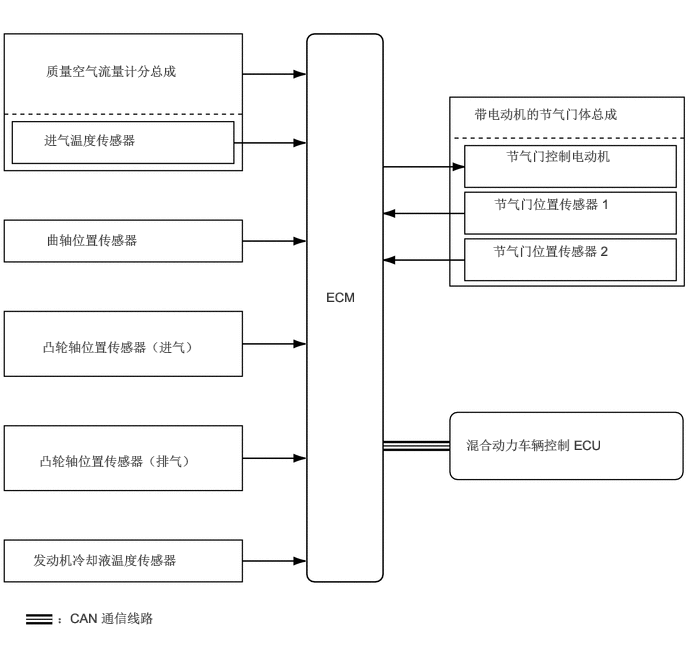

功能
采用 ETCS-i，以便在所有工作范围内提供出色的节气门控制。
ETCS-i 利用 ECM 计算出适合相应驾驶条件的最佳节气门开度，并利用节气门控制电动机控制节气门开度。
ETCS-i 控制怠速转速和巡航控制系统。
节气门位置传感器采用双电路系统以加强失效保护功能，从而确保了可靠性。

| 节气门开度控制 | 根据来自 ECM 的信号，依据驾驶条件控制节气门开度。 |
| 怠速控制 (ISC) | 根据发动机冷却液温度、发动机负载期间的旋转波动控制等控制快怠速转速，以保持最佳怠速转速。 |
| ECT + EFI + ETCS-i 集成控制（减少换档冲击控制） | 控制 ECT 换档期间的节气门开度，以在加档和减档时减少换档冲击并缩短换档时间。 |
| VVT-iE + VVT-i + ETCS-i 集成控制 | 协调控制节气门、VVT-iE 和 VVT-i 以实现正常驾驶时的最佳燃油经济性。此外，根据加速期间的驾驶员意图，控制各执行器以实现高转矩响应。 |